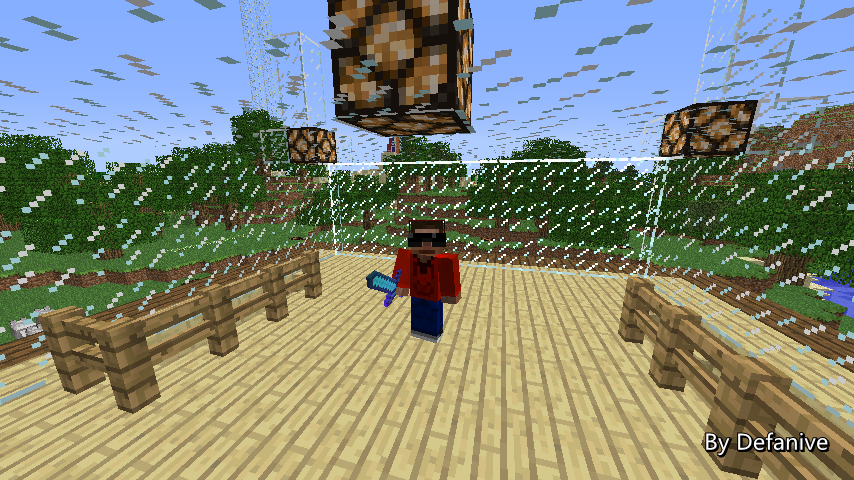

首页
上一页
262
263
264
265
266
267
267
268
269
270
271
272
下一页
末页
defanive2
无尽黑夜
14
其次biome会大改，也就是说世界生成器会大改
据说会增加很多biome，旧biome也会修改
这样旧世界存档可能就会有问题
例如最常见的问题就是新生成的chunk和旧chunk无法接合
PS z=19这条路线已经快完结了，
——来自 MCLive
21379楼
2013-08-20 14:53
defanive2
无尽黑夜
14
即使有这样的问题也可以继续下去
但是，还有另外一种更致命的问题
当biome生成有变化之后
可能旧存档的原biome处新的生成器会生成其他biome
例如旧存档里这个地方是沙漠，而新biome里则是雪原
那么就会导致存档里沙漠下雪的景象。。
这样的话旧存档就会被严重影响了
PS 开始z=21的路线了，还有z=23和z=25就完工了
——来自 MCLive
21380楼
2013-08-20 14:55
defanive2
无尽黑夜
14
经过临时羊场的时候发现缰绳都散架了
这是BUG吗。。
——来自 MCLive
21381楼
2013-08-20 14:56
defanive2
无尽黑夜
14
个人对这个问题还是比较乐观的
如果没记错的话，从某个版本开始biome是保存在地图文件里面
也就是说旧存档仍然有旧存档的正确的biome
旧存档还是可以正常使用的
PS 还剩最后一条路线了，z=25
——来自 MCLive
21387楼
2013-08-20 15:22
defanive2
无尽黑夜
14
这里藏了好几只牛，现在才找到
基本上现在都是在最后检查的阶段了
——来自 MCLive
21393楼
2013-08-20 15:38
defanive2
无尽黑夜
14
spawn chunk牛场里面的牛也要杀掉
——来自 MCLive
21402楼
2013-08-20 15:59
defanive2
无尽黑夜
14
任务完成得差不多了
今天就直播到这里了，先去睡觉了！
——来自 MCLive
21407楼
2013-08-20 16:09
defanive2
无尽黑夜
14
直播又回来啦！
大家不要问我为什么在这么奇怪的时间直播
我们来继续动物塔的计划吧
——来自 MCLive

21417楼
2013-08-20 21:00
defanive2
无尽黑夜
14
之前大部分绳子都断掉之后，羊开始到处乱跑
于是最后我就决定，咳咳，嗯，就是这样。。
——来自 MCLive
21419楼
2013-08-20 21:02
defanive2
无尽黑夜
14
背包里面也没有什么奇怪的掉落。。
大概就是这样了，我们继续这个工程吧
——来自 MCLive
21420楼
2013-08-20 21:03
defanive2
无尽黑夜
14
完成了清理所有动物之后
spawn chunks周围就只有狗和猫了
接下来我们就需要找一个刷怪的地方
与刷怪塔一样，我们需要尽可能的降低无效面积
也就是说，除了我们建造的动物塔
周围17x17个chunk中都不能有可以刷动物的地方
——来自 MCLive
21423楼
2013-08-20 21:08
defanive2
无尽黑夜
14
要怎么控制无效面积呢
方法之一是把17x17中的所有草地都移除
但是这是一个不是很好的办法
刷动物的话biome如果是ocean或者desert那么就自然不会刷了
而且ocean和desert本身也没有草地
——来自 MCLive
21425楼
2013-08-20 21:11
defanive2
无尽黑夜
14
这么说的话随便找一片海洋就可以开始建了
不过不是这样的，因为要刷动物自然也需要在正确的biome中
所以要找一个适合做动物塔的位置
中心要有一定大小的可刷动物的biome
周围则尽可能的多不可刷动物的biome
于是最后就把范围缩小到了：海上孤岛，沙漠绿洲
——来自 MCLive
21426楼
2013-08-20 21:15
defanive2
无尽黑夜
14
沙漠绿洲没能找到，只能从海岛中选择了
最后决定在这个岛上进行
地图中处于中间靠右的岛，带有海滩
原因是下方两个岛靠得太近，上方的岛太大
虽然这个岛也稍微有点大，不过还是可接受范围
于是动物塔就决定建在那里了
PS 上方靠中间还有一个非常小的岛
不过之前去跑了一次，发现那个岛的biome都是ocean
——来自 MCLive
21435楼
2013-08-20 21:36
defanive2
无尽黑夜
14
带上旅行材料，准备往小岛出发！
——来自 MCLive
21436楼
2013-08-20 21:38
defanive2
无尽黑夜
14
到达这个岛了，的确是比预想的要大很多
——来自 MCLive
21438楼
2013-08-20 21:45
defanive2
无尽黑夜
14
这个岛看起来像是个三叉路口
简单的看了一下周围的情况
决定在交叉口的最下端作为塔中心建塔
然后最上端作为等待点
这样可以尽可能的利用面积
而且可以避开右下角雪原的影响
——来自 MCLive
21440楼
2013-08-20 21:49
defanive2
无尽黑夜
14
建好地狱门，顺便马克一下进门前的坐标
目测附近没有用过的地狱门
所以应该会出生在没有去过的地方
——来自 MCLive
21441楼
2013-08-20 21:53
defanive2
无尽黑夜
14
到了一个看起来挺安全的地方
简单算了一下坐标，传送到了准确的地方
接下来应该往这个方向走就可以回家
——来自 MCLive
21442楼
2013-08-20 21:56
defanive2
无尽黑夜
14
挖了一条200+格的隧道之后终于到家了
可以准备建造动物塔了
——来自 MCLive
21444楼
2013-08-20 22:07
defanive2
无尽黑夜
14
回家取一些材料
动物塔需要草地作为刷怪源
带上silk touch的稿子会很好用
不过也要带上普通的铲子把泥土给清理掉
——来自 MCLive
21445楼
2013-08-20 22:10
defanive2
无尽黑夜
14
接下来要开始清理全部的草地了
——来自 MCLive
21449楼
2013-08-20 22:13
defanive2
无尽黑夜
14
目前的进度，大概清理了1/5到1/4的草地
——来自 MCLive
21451楼
2013-08-20 22:22
defanive2
无尽黑夜
14
目前的进展，非常不错
silk touch的钻石铲快坏了
预计坏了之后我就用普通的铲子铲草了
——来自 MCLive
21454楼
2013-08-20 22:45
defanive2
无尽黑夜
14
刚刚去找东西吃了
顺便也加油完成了所有的挖草工作
——来自 MCLive
21462楼
2013-08-20 23:26
defanive2
无尽黑夜
14
于是从地图上看整个小岛大概就是这个样子了
——来自 MCLive
21464楼
2013-08-20 23:28
defanive2
无尽黑夜
14
获得了一箱+2组的草地
——来自 MCLive
21466楼
2013-08-20 23:30
defanive2
无尽黑夜
14
附近的这个小岛也顺便清理掉吧
虽然说这个biome是ocean
但是安全起见，有草地的地方也给清除掉
而且面积也不大，2分钟内估计可以完成
——来自 MCLive
21467楼
2013-08-20 23:32
defanive2
无尽黑夜
14
现在看起来2个小岛的样子
应该保证附近都没有草地了
——来自 MCLive
21469楼
2013-08-20 23:35
defanive2
无尽黑夜
14
突然直播不了了 = =
真蛋疼
21481楼
2013-08-21 00:49
首页
上一页
262
263
264
265
266
267
267
268
269
270
271
272
下一页
末页